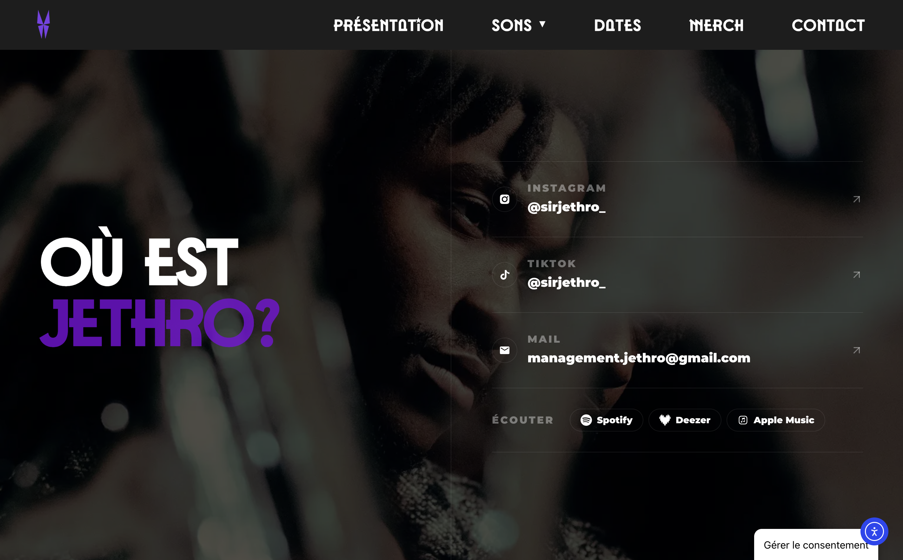

Jethro — Kaléidoscope
Un site pensé comme un musée immersif pour accompagner la sortie de Kaléidoscope, entre identité visuelle, musique et exploration digitale.
Page contact

Capture du siteJethro — Kaléidoscope' " />
Un kaléidoscope digital
Pour accompagner l’univers de Jethro et son EP Kaléidoscope, nous avons imaginé un site qui dépasse la simple présentation d’un artiste.
L’objectif était de créer une expérience visuelle cohérente avec les thèmes de l’EP : introspection, identité, chaos et transformation.
Le site devient ainsi une sorte de musée numérique dans lequel chaque contenu participe à raconter l’univers de l’artiste.